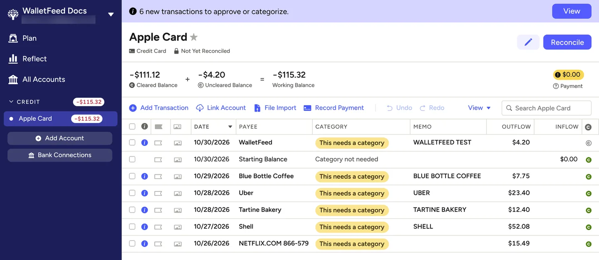
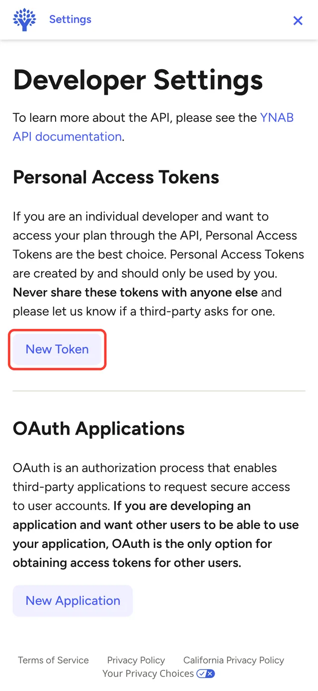
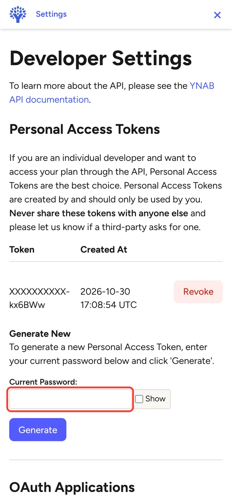
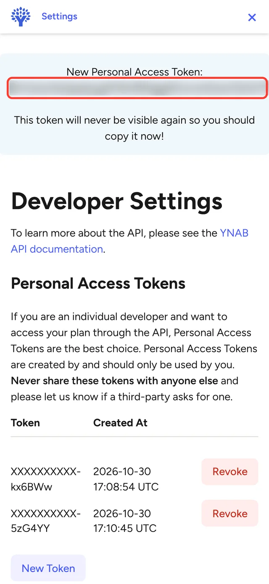
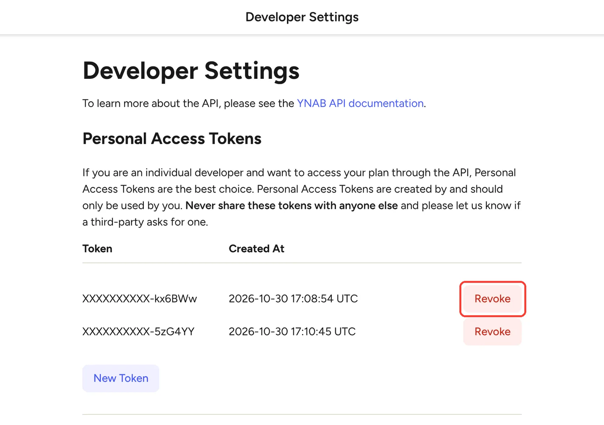
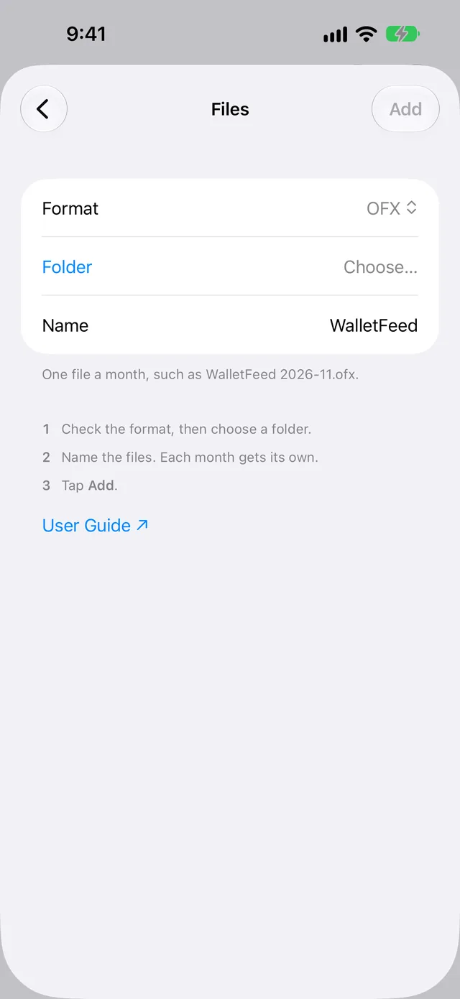

Send Apple Card transactions to YNAB
WalletFeed sends your Apple Card, Apple Cash and Savings transactions from your iPhone to YNAB. You connect WalletFeed to YNAB with Sign In with YNAB. You can also use a personal access token that you make in YNAB.
Before you start
You must have these items:
- An iPhone with iOS 26 or a newer version. WalletFeed is available only in the US.
- WalletFeed on your iPhone, with access to your Apple Card, Apple Cash or Savings account.
- WalletFeed Pro (a subscription with a 1-week free trial, or a one-time Lifetime purchase). You must have WalletFeed Pro to send transactions to YNAB.
- A YNAB account. YNAB has a 34-day free trial. If you make the account on ynab.com, a credit card is not necessary. After the trial, you must have a YNAB subscription.
- For a personal access token, the password of your YNAB account. YNAB makes a token only after you type your password. If you get access to YNAB with Continue with Apple or Continue with Google, you must first set a password in Account Settings › Login Methods.
Your token stays on your iPhone
- WalletFeed keeps the sign-in or the personal access token in the Keychain on your iPhone. iOS encrypts the Keychain.
- The sign-in or the personal access token does not go to iCloud Keychain or to your other devices.
- WalletFeed has no account, and no WalletFeed server keeps the sign-in or the personal access token. No person at WalletFeed can see or get the sign-in or the personal access token.
- Your iPhone sends the personal access token only to YNAB. It sends the sign-in only to YNAB and to the WalletFeed sign-in service (refer to Step 2).
- When you delete the destination, WalletFeed deletes the sign-in or the personal access token from your iPhone. You can also remove WalletFeed, or revoke the token, in YNAB.
The Apple Wallet connection in YNAB
With an Apple Wallet connection, the YNAB app for iPhone can also get your Apple Card, Apple Cash and Savings transactions from Wallet. The YNAB Help Center page about Apple Wallet connections gives these limits:
- YNAB gets only the transactions from the last 31 days.
- YNAB gets the transactions only from the iPhone that you used to add the connection.
- YNAB does not get transactions while Background App Refresh is off. Low Power Mode also stops Background App Refresh.
WalletFeed helps you use only one of the two for each YNAB account:
- In Account, WalletFeed does not show the YNAB accounts that have a connection to a bank or to Apple Wallet.
- If a YNAB account has transactions from a different import, WalletFeed sends only the transactions from the day after the last of these transactions. Examples of a different import are the Apple Wallet connection, a file and a different app.
- Before Send History sends previous transactions to YNAB, WalletFeed shows Send History to YNAB?
If a YNAB account has an Apple Wallet connection, WalletFeed can send transactions to it only after you remove the connection in YNAB. WalletFeed can also make a new Apple Card account for its transactions (refer to Step 3).
Step 1: Open the YNAB form in WalletFeed
-
On your iPhone, open WalletFeed.
-
Tap Destinations.
-
Tap + at the top of the screen.

-
In the search field, type
YNAB. -
Tap YNAB.
-
If WalletFeed shows WalletFeed Pro, get WalletFeed Pro.
Result: After you get WalletFeed Pro, WalletFeed shows the YNAB form with Sign In with YNAB.
Step 2: Connect WalletFeed to YNAB
YNAB gives a sign-in to an app only through a server. Thus, for this step, your iPhone uses the WalletFeed sign-in service. The sign-in service completes the sign-in and keeps nothing. Your transactions go from your iPhone directly to YNAB.
With Sign In with YNAB, WalletFeed can read and change your YNAB plans. WalletFeed adds, changes and deletes only the transactions that it sends. To use a personal access token, refer to Connect with a personal access token.
-
In the YNAB form, tap Sign In with YNAB.
Result: WalletFeed opens YNAB.
-
If YNAB shows Log In, get access to your YNAB account with your e-mail address and your password.
Result: YNAB shows Authorize WalletFeed. The page shows the data that WalletFeed can read and change.
-
Tap Authorize.
Result: The YNAB form shows Signed In. Then WalletFeed shows Plan and Account.
Step 3: Select the plan and the accounts
-
In Plan, select your YNAB plan.
If you have more than one plan, WalletFeed first selects the plan that changed last.
-
For each Wallet account, select the YNAB account that receives its transactions.
WalletFeed shows one row for each Wallet account that it can read, for example Apple Card, Apple Cash and Savings. Each Wallet account goes to a different YNAB account. Thus, the balance of each YNAB account agrees with one card or account.
At first, only Apple Card sends. For Apple Card, WalletFeed selects the account with the name Apple Card, or New Apple Card Account. For the other Wallet accounts, WalletFeed selects Don't Send.
If you keep New Apple Card Account, WalletFeed makes a credit card account with the name Apple Card. For Apple Cash, WalletFeed shows New Apple Cash Account (a checking account). For Savings, it shows New Apple Savings Account (a savings account).
The rows do not show closed accounts. They also do not show accounts with a connection to a bank or to Apple Wallet. If the plan has a connected account, WalletFeed shows "Linked accounts aren't listed, so nothing arrives twice."
A YNAB account that you select in one row does not show in the other rows.
If you select an account with transactions from a different import, WalletFeed shows its start date. For example, WalletFeed shows "Apple Card already has transactions up to October 14, 2026, so WalletFeed sends newer ones."
-
Tap Add.
Result: WalletFeed shows Send Transactions to YNAB? The message tells you the data that YNAB receives, the Wallet accounts and the start date. If you tap Cancel, WalletFeed does not add the destination. If WalletFeed made a new account, the account stays in YNAB, and WalletFeed selects it in its row.
-
Tap Send.
Result: WalletFeed starts to send your transactions to YNAB. In Destinations, the name of the new destination starts with "YNAB ·", for example "YNAB · Apple Card". If the destination sends more than one Wallet account, the name has the plan, for example "YNAB · My Plan".
Step 4: Find the transactions in YNAB
-
On a computer, open YNAB in a web browser.
-
If YNAB shows I'm Finished! at the bottom of the plan, click I'm Finished!.
In a new plan, YNAB shows this button with "Give every dollar a job". Until you complete the 6 cards that open, the sidebar shows only icons, and YNAB does not open your accounts.
-
If YNAB shows the cards, click the button on each card. The button on the last card is Let’s Do This!.
-
In the sidebar, click Apple Card or the account that you selected in WalletFeed.
Result: YNAB shows the transactions from WalletFeed. At the top, YNAB shows a message such as "6 new transactions to approve or categorize."

Connect with a personal access token
You can also connect WalletFeed to YNAB with a personal access token. You make the token in YNAB, and then you paste it in WalletFeed.
YNAB shows a warning on its Developer Settings page. The warning tells you "Never share these tokens with anyone else" and "please let us know if a third-party asks for one". YNAB also tells app developers that "OAuth is the only option for obtaining access tokens for other users". OAuth is a YNAB sign-in that gives an app access to your YNAB account. Sign In with YNAB uses OAuth. With Sign In with YNAB, a personal access token is not necessary.
WalletFeed is a third-party app. If you use a token, WalletFeed must have your personal access token.
For information about the token in WalletFeed, refer to Your token stays on your iPhone.
- With a personal access token, an app can read and change all of your YNAB plans.
- WalletFeed reads your plans and accounts with the token, and it can make an Apple Card account. WalletFeed adds, changes and deletes only the transactions that it sends.
- You can revoke the token in YNAB (refer to Revoke the token in YNAB). After you revoke the token, WalletFeed cannot connect to YNAB with it.
Make a personal access token in YNAB
To make the token on your iPhone, do these steps:
-
In the YNAB form, tap Use a Token Instead.
Result: WalletFeed shows Personal Access Token and the Developer Settings hyperlink.
-
At the bottom of the YNAB form, tap Developer Settings.
Result: Your web browser opens YNAB.
-
If YNAB shows Log In, get access to your YNAB account with your e-mail address and your password.
Result: YNAB shows Developer Settings.
-
Below Personal Access Tokens, tap New Token.

Result: YNAB shows the Generate New form on the same page.
-
In Current Password:, type your YNAB password.

-
Tap Generate.
Result: YNAB shows the token in a blue box at the top of the page, below "New Personal Access Token:". YNAB shows the token only one time.

-
Touch and hold the token.
-
Make sure that the highlighted text includes all of the token.
The token can contain hyphens (-). The highlighted text can stop at a hyphen. YNAB has no button to copy the token.
-
If the highlighted text does not include all of the token, drag the ends of the highlighted text.
-
Tap Copy.
Paste the token in WalletFeed
-
Open WalletFeed again.
-
If WalletFeed does not show the YNAB form, do Step 1 again. Then tap Use a Token Instead.
-
Touch and hold Personal Access Token.
-
Tap Paste.
Result: WalletFeed connects to YNAB with the token. Then WalletFeed shows Plan and Account. If YNAB does not accept the token, WalletFeed shows "Token rejected (HTTP 401). Create a new one in YNAB." For the steps that correct this problem, refer to If WalletFeed shows "Token rejected (HTTP 401)".
-
Do the steps in Step 3.
Data that YNAB receives
WalletFeed adds each transaction to the YNAB account that you selected.
| From Wallet | In YNAB |
|---|---|
| The merchant name, or the description if there is no merchant name | Payee |
| The amount of a purchase | Outflow |
| The amount of a refund or a card payment | Inflow |
| The date of the transaction, in the time zone of your iPhone | Date |
| The card statement text, if it is different from the merchant name | Memo |
| The status (pending or posted) | Uncleared for a pending charge, cleared for a posted charge |
| The ID of the transaction in Wallet | The import ID of the transaction |
WalletFeed sends no category, no flag and no approval. If you have rules for payee names in YNAB, YNAB uses these rules on each new transaction.
When the date, the amount or the status of a transaction changes in Wallet, WalletFeed makes the same change in YNAB. WalletFeed does not change a cleared transaction to uncleared, and it does not change a reconciled transaction. WalletFeed does not change the payee, the category, the memo, the flag or the approval that you set in YNAB.
If WalletFeed makes the account, the account starts with a balance of $0.00. YNAB calculates the balance from the transactions in the account. Thus, the balance in YNAB can be different from the balance of your card.
Your transactions go from your iPhone directly to YNAB. After YNAB receives your transactions, the terms of YNAB are applicable to them.
New and changed transactions
While WalletFeed is open, YNAB receives changes in seconds. When WalletFeed is not open, iOS starts WalletFeed approximately 1 hour or less after a change in Wallet. If Background Sync is on in Settings › Sync, WalletFeed then sends the change.
YNAB receives a pending charge as an uncleared transaction. When the charge posts, WalletFeed changes the transaction to cleared. WalletFeed also gives the transaction the amount and the date of the posted charge. To send only posted charges, you can set Filter to on and Include Pending to off (refer to Send only some transactions).
If Wallet shows a charge as declined or expired, or removes a transaction, WalletFeed deletes the transaction from YNAB. WalletFeed deletes only transactions of the last 90 days, and it does not delete a reconciled transaction.
YNAB receives a refund as a transaction that is different from the purchase. The refund amount is in Inflow.
Send previous transactions
A new destination also receives previous transactions from the start date in Settings › Sync › Initial History. Initial History is All until you change it.
For YNAB, WalletFeed uses one of these three dates as the start date:
- The start date of Initial History.
- The day after the last transaction from a different import, in the YNAB account that you selected. WalletFeed shows this date below Account in Step 3.
- The day after the date 5 years before today. YNAB does not accept a transaction with a date more than 5 years before today.
Of the three dates, WalletFeed uses the date that follows the other two. Thus, if Initial History is All, YNAB receives a maximum of 5 years of transactions. The message Send Transactions to YNAB? gives the start date. Transactions that you typed in YNAB do not change the start date.
To send previous transactions after you add YNAB, do these steps:
-
In Destinations, tap the YNAB destination.
-
Tap Send History.
-
Tap 30 Days, 90 Days, 1 Year or All.
Result: WalletFeed shows Send History to YNAB? and "If YNAB already has some from a file or another app, they can appear twice."
-
Tap Send.
Result: WalletFeed shows Sending History and the number of transactions that it sent.
-
To stop WalletFeed before it sends all of the transactions, tap Send History › Stop Sending.
WalletFeed sends 100 previous transactions to YNAB, then waits 4 minutes before it sends 100 more. Thus, WalletFeed sends approximately 1,400 transactions in 1 hour. YNAB accepts a maximum of 200 requests in 1 hour for each token. For 1,400 transactions, WalletFeed uses approximately 28 requests.
Send History does not add a transaction from WalletFeed two times. If you deleted a transaction that WalletFeed sent, Send History does not add the transaction to YNAB again. But if YNAB also got a transaction from a different import (for example, a file), YNAB can show the transaction two times.
For more information, refer to Send previous transactions.
Change or remove the destination
You change the YNAB destination on its screen in Destinations. The screen shows the Plan, then each Wallet account of the destination with its YNAB account. For more information about this screen, refer to Destinations.
Send only some transactions
-
In Destinations, tap the YNAB destination.
-
Set Filter to on.
-
Change Include, Minimum, Include Pending, Categories or Exclude.
The YNAB destination receives only the Wallet accounts that its screen shows, also when Filter is off. Thus, Filter does not show Accounts. With Apple Intelligence, you can also type a rule in words (for example, "Travel over $50, not Uber"), then tap the Apple Intelligence icon.
For more information, refer to Filter the transactions for a destination.
Stop the destination for a time
-
In Destinations, tap the YNAB destination.
-
Set Enabled to off.
Until you set Enabled to on again, WalletFeed does not send transactions to YNAB.
Replace the sign-in
If YNAB does not accept the sign-in of the destination, do these steps:
-
In Destinations, tap the YNAB destination.
-
Tap Sign In Again.
-
If YNAB shows Log In, get access to the YNAB account that you used for the destination.
-
Tap Authorize.
Result: First, WalletFeed reads the YNAB account of the destination with the new sign-in. If WalletFeed can read the account, it keeps the new sign-in and stops the sign-in that it used before. Then the destination shows Signed In. If WalletFeed cannot read the account, WalletFeed does not keep the new sign-in. Then WalletFeed shows a message with the cause.
Replace the token
If you revoked the token in YNAB, or if YNAB does not accept the token, do these steps:
-
Make a new token in YNAB (refer to Make a personal access token in YNAB).
-
Open WalletFeed again.
-
In Destinations, tap the YNAB destination.
-
Tap Replace Token.
-
Touch and hold Personal Access Token.
-
Tap Paste.
-
Tap Replace.
Result: First, WalletFeed reads the YNAB account of the destination with the new token. If the account is open, WalletFeed puts the new token in the Keychain. Then Replace Token shows a green checkmark. If WalletFeed cannot read the account, or if the account is not open, WalletFeed does not keep the new token. Then WalletFeed shows a message with the cause.
Remove YNAB from WalletFeed
-
In Destinations, tap the YNAB destination.
-
Tap Delete.
-
Tap Delete again.
Result: WalletFeed removes the destination and deletes the sign-in or the token from your iPhone. For a sign-in, WalletFeed also tells YNAB to stop the sign-in. The transactions that WalletFeed sent stay in YNAB. Until you revoke a token in YNAB, YNAB accepts the token.
Revoke the token in YNAB
-
On a computer, open Developer Settings in YNAB.
-
If YNAB shows Log In, get access to your YNAB account with your e-mail address and your password.
-
Below Personal Access Tokens, find the WalletFeed token by its Created At time.
The tokens have no names. YNAB shows each token as
XXXXXXXXXX-and its last 6 characters. Created At shows the time in UTC. -
In the row for the WalletFeed token, click Revoke.
Result: YNAB revokes the token and shows "The Personal Access Token was successfully revoked."

After you revoke the token, WalletFeed cannot send transactions to YNAB. When WalletFeed tries to send transactions, the YNAB destination shows "Authentication failed". WalletFeed can send transactions again after you replace the token.
If there is a problem
To make sure that WalletFeed can send transactions to YNAB, do these steps:
-
In Destinations, tap the YNAB destination.
-
Tap Send Test.
Result: If YNAB receives the test transaction, WalletFeed shows a green checkmark.
If WalletFeed shows "Token rejected (HTTP 401)"
YNAB does not accept the token, for example because you copied only a part of the token. WalletFeed then shows "Token rejected (HTTP 401). Create a new one in YNAB."
-
Make a new token in YNAB (refer to Make a personal access token in YNAB).
Before you tap Copy, the highlighted text must include all of the token.
-
Open WalletFeed again.
-
Touch and hold Personal Access Token.
-
Tap Paste.
If the destination shows "Authentication failed"
YNAB does not accept the sign-in or the token of the destination. For example, a person revoked the token or removed WalletFeed in YNAB. While WalletFeed sends previous transactions, it also shows "Authentication failed. Sign in again." or "Authentication failed. Replace the token."
- If the destination has a sign-in, replace the sign-in (refer to Replace the sign-in).
- If the destination has a token, replace the token (refer to Replace the token).
If WalletFeed shows "YNAB allows 25 sign-ins"
At this time, YNAB lets only 25 YNAB accounts use Sign In with YNAB for WalletFeed. After 25 accounts, YNAB shows a message on its page and does not let more accounts connect. Then WalletFeed shows "YNAB allows 25 sign-ins until it reviews WalletFeed. Use a token instead." WalletFeed also shows this message if you close the YNAB page before you tap Authorize.
- In the YNAB form, tap Use a Token Instead.
- Do the steps in Connect with a personal access token.
If WalletFeed shows "YNAB sign-in isn't available right now"
The WalletFeed sign-in service cannot connect you to YNAB at this time. WalletFeed then shows "YNAB sign-in isn't available right now. Try again later."
- Wait some minutes.
- Tap Sign In with YNAB again.
If you did not copy the token
YNAB shows a token only one time.
- In YNAB, open Developer Settings again (refer to Make a personal access token in YNAB).
- Find the token that you did not copy by its Created At time.
- In the row for that token, tap Revoke.
- Make a new token (refer to Make a personal access token in YNAB).
If WalletFeed shows "YNAB allows 200 requests an hour"
YNAB accepts a maximum of 200 requests in 1 hour for each token. After 200 requests, WalletFeed shows "YNAB allows 200 requests an hour. WalletFeed sends the rest later."
-
Wait.
When YNAB accepts requests again, WalletFeed sends the transactions. Send History waits a minimum of 15 minutes before it continues.
-
If a different app uses the same token, make a new token for WalletFeed (refer to Replace the token).
When two apps use one token, the limit of 200 requests is for the two apps together.
If WalletFeed shows "Your YNAB trial has ended"
Your free trial of YNAB stopped. WalletFeed then shows "Your YNAB trial has ended. Subscribe in YNAB to keep sending."
- In YNAB, get a YNAB subscription.
- On your iPhone, open WalletFeed.
- Tap the gear icon at the top of Destinations.
- In Settings › Sync, tap Sync Now.
If WalletFeed shows "Your YNAB subscription has lapsed"
Your YNAB subscription stopped. WalletFeed then shows "Your YNAB subscription has lapsed. Renew it in YNAB."
- In YNAB, start your YNAB subscription again.
- On your iPhone, open WalletFeed.
- Tap the gear icon at the top of Destinations.
- In Settings › Sync, tap Sync Now.
If WalletFeed shows "Confirm your email address in YNAB"
YNAB lets WalletFeed connect only after you use the hyperlink in the e-mail from YNAB. Until then, WalletFeed shows "Confirm your email address in YNAB, then try again."
-
Open the e-mail from YNAB with the subject "Please confirm your email".
-
In the e-mail, tap the hyperlink.
-
Tap Confirm Your Email.
Result: YNAB shows "Success! Your email is now confirmed."
-
Open WalletFeed again.
-
If WalletFeed shows the YNAB form, tap Try Again.
If WalletFeed shows "This account has no plans. Make one in YNAB."
Your YNAB account has no plan. WalletFeed cannot send transactions without a plan.
-
In YNAB, make a plan.
-
Open WalletFeed again.
-
If the YNAB form shows Signed In, tap Use Another Account.
-
On the YNAB page, tap Authorize.
-
If the YNAB form shows Personal Access Token, delete the text in Personal Access Token.
-
Touch and hold Personal Access Token.
-
Tap Paste.
Result: WalletFeed shows Plan and Account.
If WalletFeed shows "The account is closed in YNAB"
A person closed the YNAB account of the destination. YNAB puts new transactions in a closed account with no warning. Thus, before WalletFeed sends new transactions, it reads the account. If the account is not open, WalletFeed does not send the transactions and shows "The account is closed in YNAB. Reopen it, or add this destination again." If the destination sends more than one Wallet account, the message has the name of the account, for example "Apple Cash is closed in YNAB. Reopen it, or add this destination again."
-
On a computer, open YNAB in a web browser.
-
In the sidebar, click CLOSED.
-
Click the account of the destination.
-
At the top right of the account, click the pencil button to the left of Reconcile.
Result: YNAB shows Edit Account. The pencil button has the tooltip "Edit Account".
-
Click Re-open.
If you do not want to open the account again, do these steps:
- Remove the destination (refer to Remove YNAB from WalletFeed).
- Add YNAB again (refer to Step 1).
If WalletFeed shows "The account is gone from YNAB"
A person deleted the YNAB account of the destination. Before WalletFeed sends new transactions, it reads the account. If the account is not in YNAB, WalletFeed does not send the transactions and shows "The account is gone from YNAB. Add this destination again." If the destination sends more than one Wallet account, the message has the name of the account, for example "Apple Cash is gone from YNAB. Add this destination again."
- Remove the destination (refer to Remove YNAB from WalletFeed).
- Add YNAB again (refer to Step 1).
If WalletFeed shows "The plan is gone from YNAB"
A person deleted the YNAB plan of the destination. WalletFeed then shows "The plan is gone from YNAB. Add this destination again."
- Remove the destination (refer to Remove YNAB from WalletFeed).
- Add YNAB again (refer to Step 1).
If YNAB shows a transaction two times
YNAB got the purchase from WalletFeed and from a different import (for example, the Apple Wallet connection or a file). YNAB keeps the two transactions.
- In YNAB, delete one of the two transactions.
- For this YNAB account, use only WalletFeed or only the different import.
If you delete the transaction that WalletFeed sent, WalletFeed does not add the transaction again.
If a payment between two Wallet accounts shows as two transactions
You can send two Wallet accounts to YNAB, for example Apple Card and Apple Cash. Then a payment from one account to the other comes as two transactions, one in each YNAB account. YNAB does not connect the two transactions.
-
In YNAB, open one of the two transactions.
-
Change the payee to the transfer to the other account, for example Transfer : Apple Card.
Result: YNAB adds the other half of the transfer to the other account.
-
In the other account, if YNAB shows the payment two times, delete the transaction that WalletFeed sent.
If Destinations shows "Sync Requires Pro"
You do not have WalletFeed Pro at this time. WalletFeed keeps the destination, but it does not send transactions to YNAB.
- In Destinations, tap Upgrade.
- Select a subscription or the Lifetime purchase.
- Tap Start Free Trial, Subscribe or Buy Lifetime.
If YNAB receives transactions only while WalletFeed is open
When Background Sync is off, WalletFeed sends transactions only while it is open.
- On your iPhone, open WalletFeed.
- Tap the gear icon at the top of Destinations.
- In Settings › Sync, set Background Sync to on.
For more information, refer to Background Sync.
Use OFX files instead
You can also put your transactions in YNAB with files from WalletFeed. You import each file in YNAB with a web browser on a computer, or with Safari on an iPad.
Without WalletFeed Pro, you can make a CSV file one time with Export CSV in Settings (refer to Export CSV). With WalletFeed Pro, an OFX File destination writes one file for each month to a folder in iCloud Drive. WalletFeed changes the files when your transactions change.
If you change from the files to the YNAB destination, the destination sends transactions from the day after the last transaction in the files.
To add the OFX File destination, do these steps:
-
On your iPhone, open WalletFeed.
-
Tap Destinations.
-
Tap + at the top of the screen.
-
In the search field, type
OFX. -
Tap OFX File.
-
Make sure that Format is OFX.

-
Tap Folder.
-
Select a folder in iCloud Drive.
-
Tap Add.
Result: WalletFeed shows Save Transactions to Files? with a message.
-
Tap Save.
Result: WalletFeed writes your posted transactions to the files. If the name is
WalletFeed, the file for October 2026 isWalletFeed 2026-10.ofx.
YNAB puts all of the transactions in a file into one account. Thus, the files must contain only your Apple Card transactions. If WalletFeed has access to more than one Wallet account, do these steps:
-
In Destinations, tap the OFX File destination.
-
Set Filter to on.
-
Tap Accounts.
-
Select your Apple Card account.
-
Tap the back button at the top of the screen.
-
Tap Send History › All.
Result: WalletFeed writes the file again for each month. These files then have only your Apple Card transactions.
To import a file in YNAB, do these steps:
-
On your computer, open YNAB in a web browser.
-
Open the iCloud Drive folder that has the files from WalletFeed.
-
Drag the file for a month into YNAB.
Result: YNAB shows Import Transactions.
-
At the top of Import Transactions, make sure that YNAB shows your Apple Card account.
-
To put the memos in YNAB, select Import Memos.
-
To import the file, obey the instructions in YNAB.
An OFX file contains a transaction only after the transaction posts. YNAB gets the changes in a file only when you import the file again. If you import a file again, YNAB does not add a transaction with the same date and amount as a transaction that it added before. For more information, refer to the guide for OFX files and the YNAB Help Center page for file import.
“We are not affiliated, associated, or in any way officially connected with YNAB or any of its subsidiaries or affiliates. The official YNAB website can be found at https://www.ynab.com.”
Related
Updated October 31, 2026